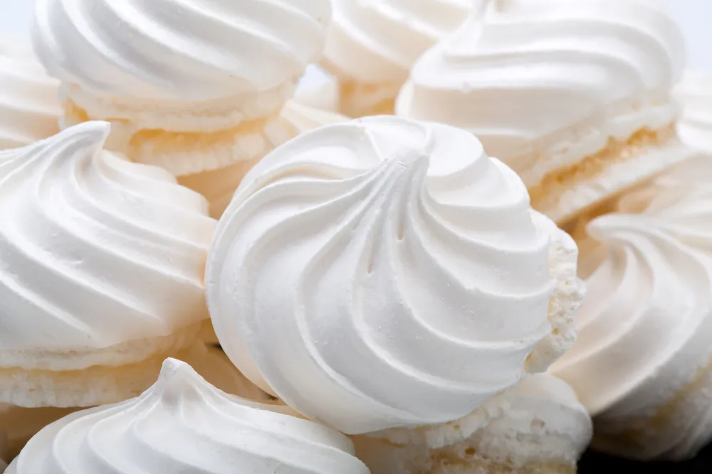

Meringues

Fluffy light meringues are easy to make! They only require 5 ingredients, though the technique might require some practice
Ingredients you'll need:
- 4 large egg whites room temperature
- 1/2 teaspoon cream of tartar
- 1/8 teaspoon of salt
- 1 cup granulated sugar (200g)
- 1 teaspoon of vanilla extract
Steps
- Preheat oven to 225F and line a large cookie sheet with parchment paper. Set aside.
- Combine egg whites, cream of tartar, and salt in a large, completely clean, completely grease-free bowl
- Using an electric mixer or a stand mixer (with either the whisk or paddle attachment), stir on low speed until mixture becomes foamy.
- Increase speed to high.
- With mixer on high, gradually add sugar, about 1 Tablespoon at a time, stirring after each addition until sugar is dissolved (about 15-20 seconds between each addition).
- Beat until mixture is thick, shiny, and has increased in volume. Mixture should have stiff peaks and sugar should be completely dissolved (you can test this by rubbing a small bit of the mixture between your fingers, if it feels gritty, the sugar isn't dissolved).
- Stir in vanilla extract and any other extract you may like to use. If using food coloring, add the food coloring at this stage, too.
- Fit a large disposable piping bag with a large tip (I used Ateco 846, but any large star tip will work or you can just snip the edge of the piping bag for a “kiss” formation) and transfer meringue to prepared piping bag and pipe onto prepared cookie sheet. The meringue cookies can be pretty close to each other as they won’t spread, and you will want to bake all of the cookies at the same time, so make sure you make enough space.
- Bake on 225F (105C) for 1 hour. Turn off the oven once the baking time has passed, and do not open the oven. Leave the oven door closed and allow cookies to cool completely in the oven (1-2 hours) before removing.
- Meringue cookies should be crisp and can be stored in an airtight container. Keep away from heat and moisture as it can soften your meringues.
Back